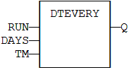
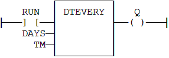

Function Block
Generate a pulse signal with long period.
|
Name |
Type |
Description |
|
RUN |
DINT |
Enabling command. |
|
DAYS |
DINT |
Period : number of days. |
|
TM |
TIME |
Rest of the period (if not a multiple of 24h). |
|
Name |
Type |
Description |
|
Q |
BOOL |
Pulse signal. |
This block provides a pulse signal with a period of more than 24h. The period is expressed as:
DAYS * 24h + TM
For instance, specifying DAYS=1 and TM=6h means a period of 30 hours.
MyDTEVERY is a declared instance of DTEVERY function block.
MyDTEVERY (RUN DAYS, TM);
Q := MyDTEVERY.Q;


MyDTEVERY is a declared instance of DTEVERY function block.
Op1: CAL MyDTEVERY (RUN DAYS, TM)
LD MyDTEVERY.Q
ST Q